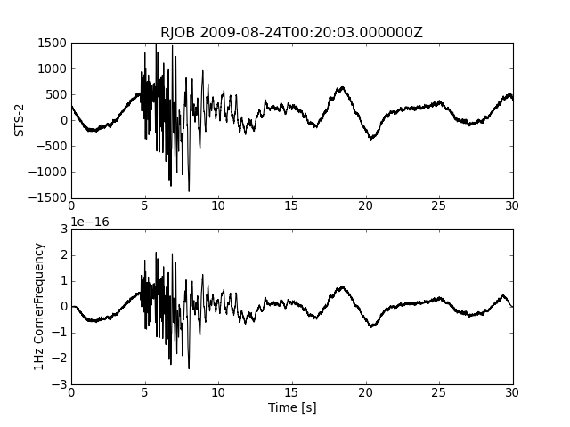

In the following example uses the obspy.arclink module in order to retrieve waveforms data as well as poles and zeros from a remote server via the ArcLink protocol. The retrieved poles and zeros are then used to correct for the instrument response and to simulate a 1Hz instrument with damping 0.707.
Note
The default client needs to open port 18002 to the host webdc.eu via TCP/IP in order to download the requested data. Please make sure that no firewall is blocking access to this server/port combination.
Note
The user keyword in the following example is used for identification with the ArcLink server as well as for usage statistics within the data center, so please provide a meaningful user id such as your email address.
import numpy as np
import matplotlib.pyplot as plt
from obspy.core import UTCDateTime
from obspy.arclink import Client
from obspy.signal import cornFreq2Paz, seisSim
# Retrieve data via ArcLink
# please provide a valid email address for the keyword user
client = Client(user="test@obspy.de")
t = UTCDateTime("2009-08-24 00:20:03")
st = client.getWaveform('BW', 'RJOB', '', 'EHZ', t, t + 30)
paz = client.getPAZ('BW', 'RJOB', '', 'EHZ', t)
# 1Hz instrument
one_hertz = cornFreq2Paz(1.0)
# Correct for frequency response of the instrument
res = seisSim(st[0].data.astype('float32'),
st[0].stats.sampling_rate,
paz,
inst_sim=one_hertz)
# Correct for overall sensitivity
res = res / paz['sensitivity']
# Plot the seismograms
sec = np.arange(len(res)) / st[0].stats.sampling_rate
plt.subplot(211)
plt.plot(sec, st[0].data, 'k')
plt.title("%s %s" % (st[0].stats.station, t))
plt.ylabel('STS-2')
plt.subplot(212)
plt.plot(sec, res, 'k')
plt.xlabel('Time [s]')
plt.ylabel('1Hz CornerFrequency')
plt.show()
[source code, hires.png, pdf]

TODO - for now see obspy.iris
TODO - for now see obspy.earthworm
TODO - for now see obspy.neries